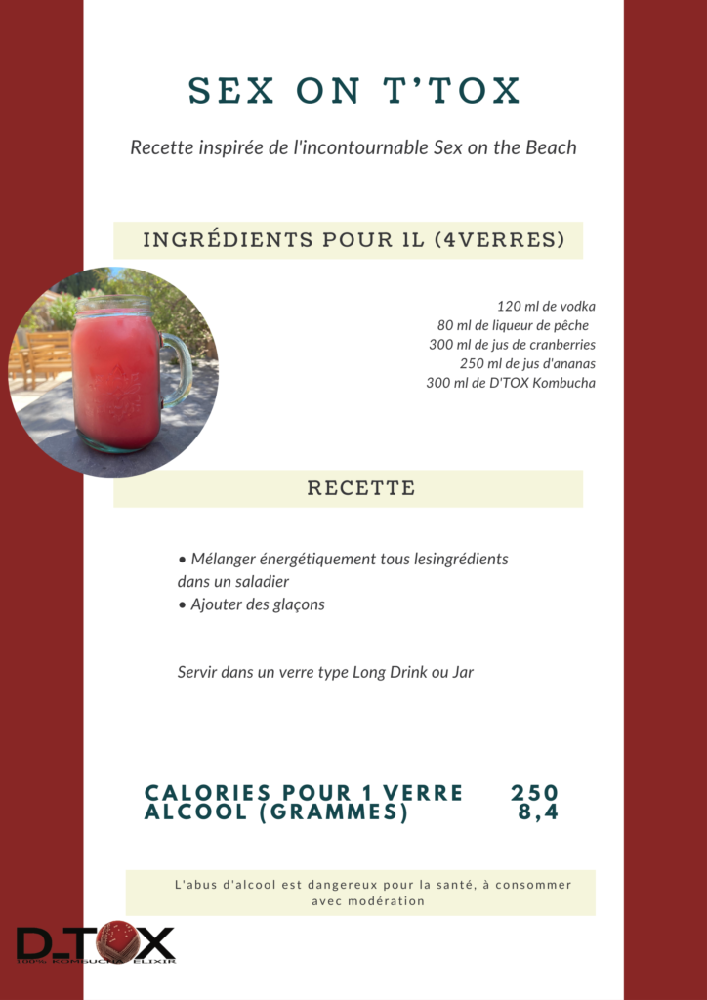

Nos Produits
Voir Nos Produits
DTÖX Original 1L
Château de la Crau
Blog
Voir Blog
News
Recettes
On parle de nous / Presse
À Propos
Voir À Propos
Notre Histoire
Chronologie
Processus
Contact
Retour au journal
Recette de cocktail : Sex On The TOX

Nos Produits
DTÖX Original 1L
Château de la Crau
Blog
News
Recettes
On parle de nous / Presse
À Propos
Notre Histoire
Chronologie
Processus
Contact